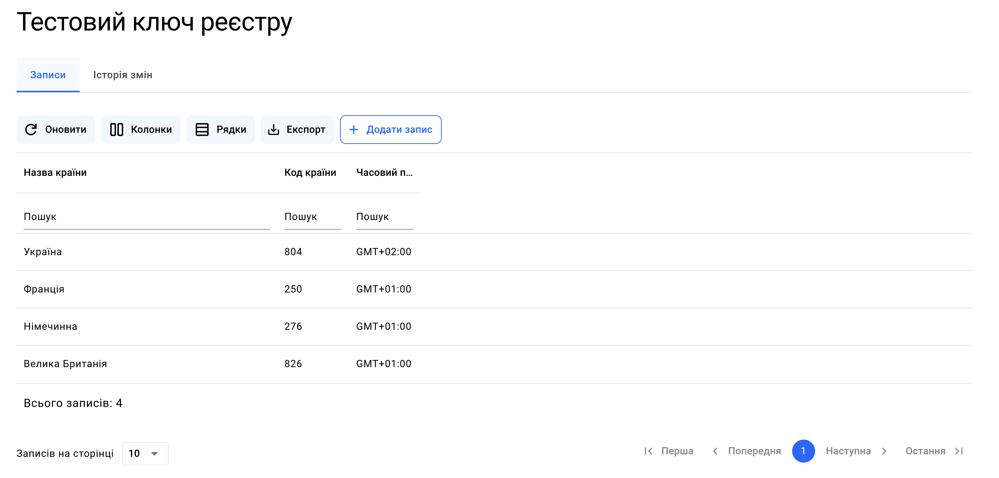
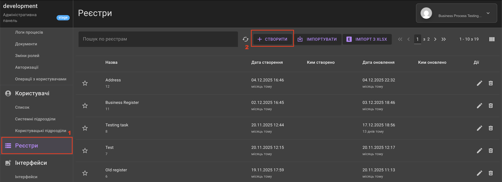
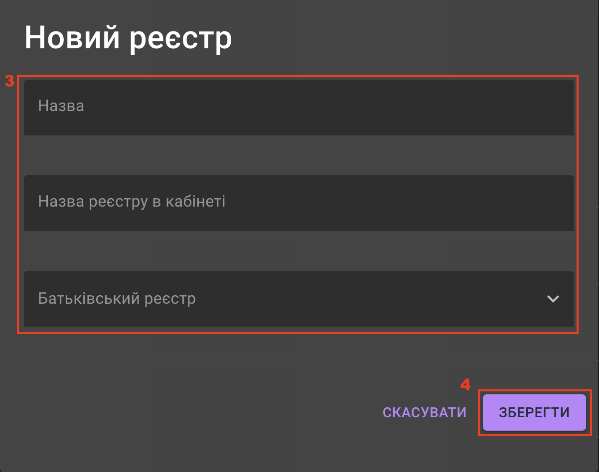
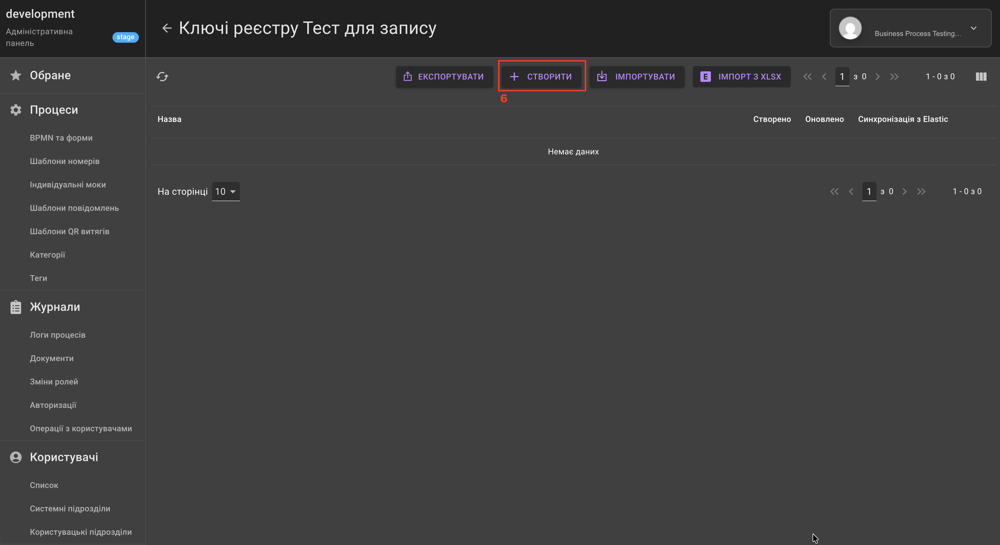
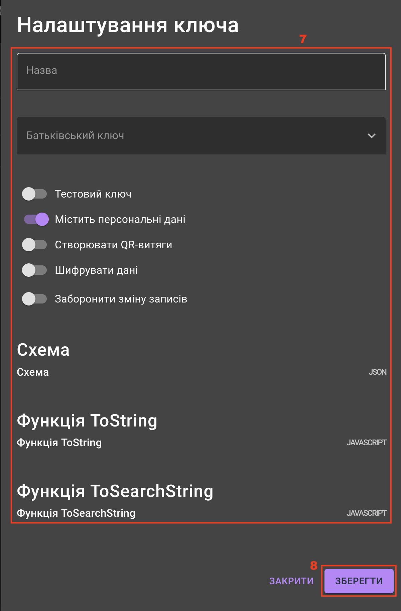

Як створити реєстр?
Про реєстри
Що таке реєстр?
Реєстр — це сховище для зберігання та обробки даних процесу: невелика база даних, інтегрована безпосередньо в логіку процесу.
Як виглядає реєстр?
В Адміністративній панелі реєстр має вигляд «папки», яка є «порожнім» контейнером. Щоб реєстр почав працювати, у ньому необхідно створити ключі реєстру — фактичні таблиці, де зберігається інформація, та описати структуру їхніх полів.
У структурі даних реєстр — це реляційна система, де замість звичайних таблиць описуються схеми документів — ключі реєстру, які зберігаються у форматі JSON.
В Електронному кабінеті ключ реєстру перетворюється з JSON-схеми на таблицю з реальними записами. Користувач може бачити тут результат виконання бізнес-процесів — список заявок із визначеними полями запису (статус, дата запису, ПІБ та інше). Тут доступні функції пошуку, фільтрації, створення, редагування, видалення полів по кожному із записів.

Ключ реєстру також може бути довідником із попередньо заповненими даними. Заповнити довідник можна в Електронному кабінеті вручну або автоматично підвантажити дані виконавши налаштування в Адміністративній панелі.
Для чого використовується реєстр?
1) Збереження: запис до ключа реєстру всіх даних, які користувач вводить під час проходження процесу.
2) Автоматизація: автоматичне оновлення або видалення інформації згідно з налаштованою логікою процесу.
3) Зв'язок даних: ключі реєстру можуть бути пов’язані між собою, дозволяючи створювати складні системи звʼязків для відображення даних.
Створення реєстру
Для створення нового реєстру авторизуйтеся в Адміністративній панелі та виконайте такі дії:
1) Перейдіть у розділ Реєстри.
2) Натисніть кнопку Створити. 
3) У спливаючому вікні заповніть поля Назва, Назва реєстра в кабінеті та Батьківський реєстр (за необхідності визначення ієрархічних звʼязків між реєстрами).
4) Натисніть кнопку Продовжити. 
5) Натисніть на щойно створений реєстр у переліку.

6) У вікні, що відкрилось, зберігаються ключі реєстру. Для створення ключа натисніть кнопку Створити. 
7) У спливному вікні заповніть поля:
Підказка
Обов'язковими є поля Назва та Схема (JSON). Інші поля заповнюються за потреби.
-
Назва — імʼя ключа реєстру;
-
Батьківський ключ — визначає ієрархічне відношення між ключами реєстру;
-
Тестовий ключ — визначає можливість ручної фільтрації ключів у списку. Обмежень у використанні такого ключа немає, тому ознака вказується за необхідності;
-
Містить персональні дані — параметр для обмеження доступу до даних ключа реєстру. За замовчуванням увімкнений. Якщо перемикач увімкнено, то доступ до ключа буде визначатися:
- через підрозділ (див. Як налаштувати права доступу?);
- через схему процесу із зазначеними персональними фільтрами;
Важливо
Перемикачі Містить персональні дані та Використовувати на формах вводу (strict access) несумісні: одночасно активованим може бути лише один з них.
-
Створювати QR-витяги — параметр для прив'язки шаблону QR-витягу до реєстру. Якщо перемикач увімкнено, необхідно налаштувати оновлення для цього ключа реєстру, додавши до нього
plink; -
Шифрувати дані — параметр для безпечного зберігання інформацію в базі даних.
-
Заборонити зміну записів — параметр для заборони на оновлення даних через елементи схеми процесу;
-
Схема (JSON) — JSON-схема ключа реєстру, що описує записи в ньому.
Структура JSON-схеми ключа складається з трьох обов'язкових блоків та одного необов'язкового:
- Обов'язкові блоки:
- type — тип даних ключа, завжди дорівнює
object. - properties — перелік JSON-полів, які повинні зберігатись в ключі. Для кожного поля має бути визначено
typeтаdescription. - required — масив, де вказуються обов'язкові поля ключа реєстру.
- type — тип даних ключа, завжди дорівнює
- Необов'язкові блоки:
- customTypes — кастомні функції валідації значень. Наприклад, якщо необхідно перевірити що значення це — email та що його домен не належить до забороненого переліку.
Приклад коду JSON-схеми
- Обов'язкові блоки:
-
Функція toString (JAVASCRIPT) — вказаний результат виконання функції буде відображати назву запису у списках вказаного процесу в Електронному кабінеті. Функція приймає один аргумент —
record(весь об'єкт зі схеми ключа);
Приклад коду
- Функція toSearchString (JAVASCRIPT) — вказаний результат виконання функції використовується як індекс для пошуку у спрощеному форматі. Приймає до 3-х індексованих значень. Функція приймає один аргумент —
record(весь об'єкт зі схеми ключа).
Приклад коду
8) Натисніть кнопку Зберегти по завершенню внесення даних.

Результат: створено реєстр із ключем, що містить JSON-схему, яка описує записи в ньому. Тепер користувач має можливість налаштувати запис до реєстру.